01
Um olhar para cada pessoa
Queremos conhecer o que você precisa, o que já conquistou e o que faz parte da sua rotina. É a partir dessa escuta que planejamos o cuidado.
Na Clínica Semear, acolhemos pessoas com autismo e outras necessidades do neurodesenvolvimento. Nossa equipe reúne diferentes especialidades para cuidar de cada pessoa, junto com a família.
Um espaço para ouvir sua história, acolher suas dúvidas e caminhar com você.
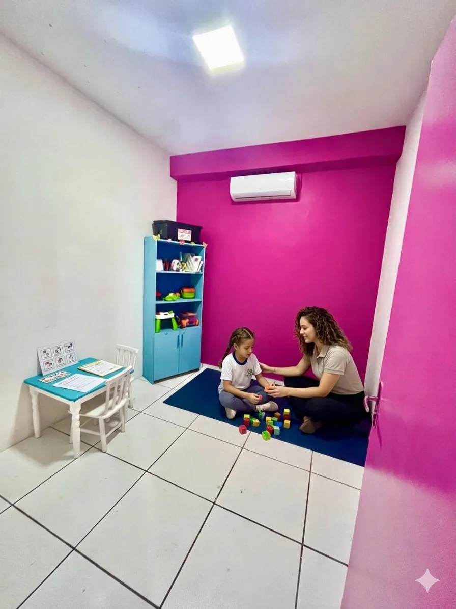
Tem um desses planos? A gente ajuda você a entender os documentos e os próximos passos. A cobertura e a autorização dependem das regras do seu convênio.
Aqui, o cuidado começa pela escuta. Conhecemos a história de cada pessoa para construir um acompanhamento que faça sentido para ela e para sua família.
Queremos conhecer o que você precisa, o que já conquistou e o que faz parte da sua rotina. É a partir dessa escuta que planejamos o cuidado.
As pequenas conquistas do dia a dia também importam: se comunicar, aprender, brincar e fazer mais coisas com autonomia.
Você pode perguntar, compartilhar dúvidas e participar. Conversamos sobre cada etapa e sobre como levar o cuidado para a rotina de casa e da escola.
Se algo no desenvolvimento preocupa você, vale conversar com um profissional. Você não precisa ter todas as respostas para buscar ajuda. Um sinal isolado não define um diagnóstico: cada história precisa ser ouvida e avaliada com atenção.
Dificuldades para falar, expressar necessidades ou se comunicar com outras pessoas.
Sensibilidade intensa a sons, texturas, cheiros, luzes ou contato físico.
Dificuldade para lidar com frustrações ou mudanças nas atividades do dia a dia.
Dificuldades persistentes em atividades do dia a dia, brincadeiras, aprendizagem ou interação.
Conte o que você está buscando. Nossa equipe explica como agendar e quais documentos levar.
O profissional conhece sua história e avalia quais cuidados podem ajudar.
Juntos, definimos os objetivos e organizamos o plano de cuidado.
Acompanhamos cada etapa, conversamos sobre os avanços e ajustamos o plano quando necessário.
Cada terapia tem seu papel. A avaliação ajuda a identificar quais delas fazem sentido para cada pessoa.
Um acompanhamento baseado na aprendizagem para desenvolver habilidades de comunicação, autonomia e convivência, respeitando as necessidades de cada pessoa.
Cuidado com a fala, a linguagem, a comunicação e os movimentos da boca e da face, conforme a necessidade de cada pessoa.
Apoio à autonomia em atividades do dia a dia, como brincar, se vestir e se alimentar.
Trabalho com as respostas a estímulos como sons, movimentos e texturas, conforme avaliação do terapeuta ocupacional.
Acompanhamento das dificuldades de aprendizagem, respeitando o jeito e o ritmo de aprender de cada pessoa.
Atividades que envolvem movimento, coordenação e percepção do próprio corpo e do espaço.
Um espaço de escuta e cuidado com as emoções, com acompanhamento individual e orientação à família.
A música como recurso terapêutico para trabalhar a expressão, a comunicação e a interação.
Cuidado com os movimentos, o equilíbrio, a postura e a coordenação nas atividades do dia a dia.
Acompanhamento das dificuldades com a alimentação, considerando sensações, movimentos e comportamentos envolvidos nas refeições.
Recurso complementar utilizado por profissional habilitado quando houver indicação clínica.
Ventosaterapia e auriculoterapia podem ser utilizadas conforme avaliação, indicação profissional e objetivos do acompanhamento.
Conheça os ambientes da Semear: espaços preparados para as terapias, as atividades e o acolhimento das famílias.
Um passeio pela Semear. Deslize para conhecer os ambientes.
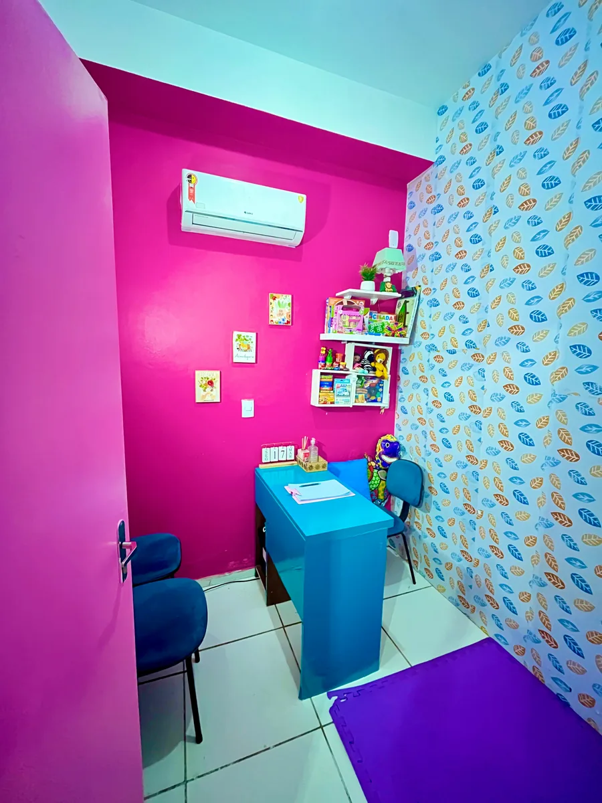
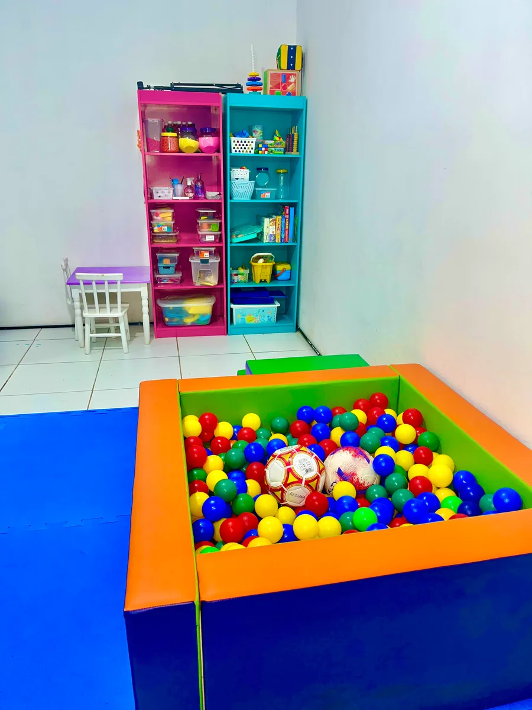
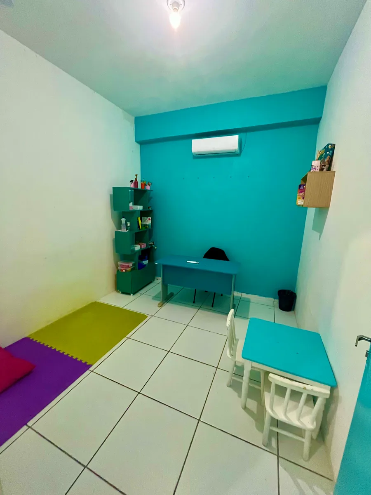
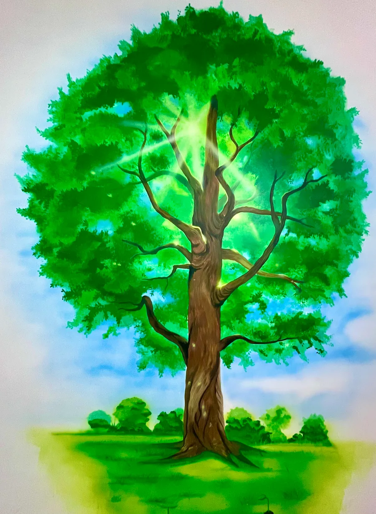
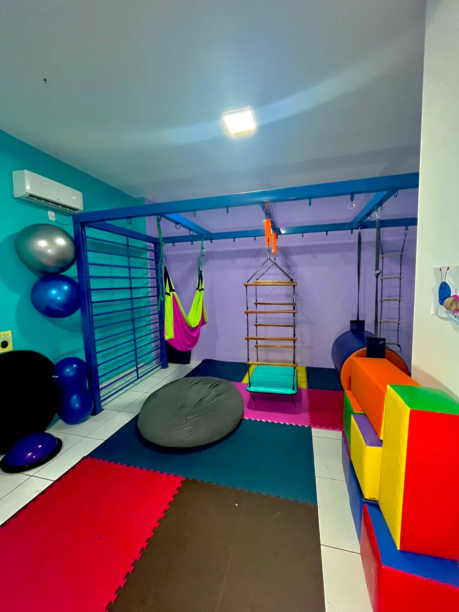
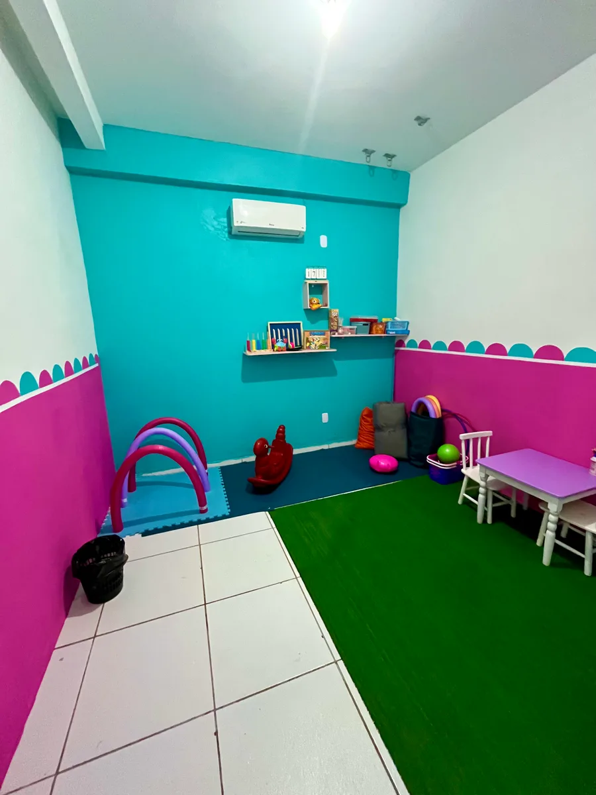
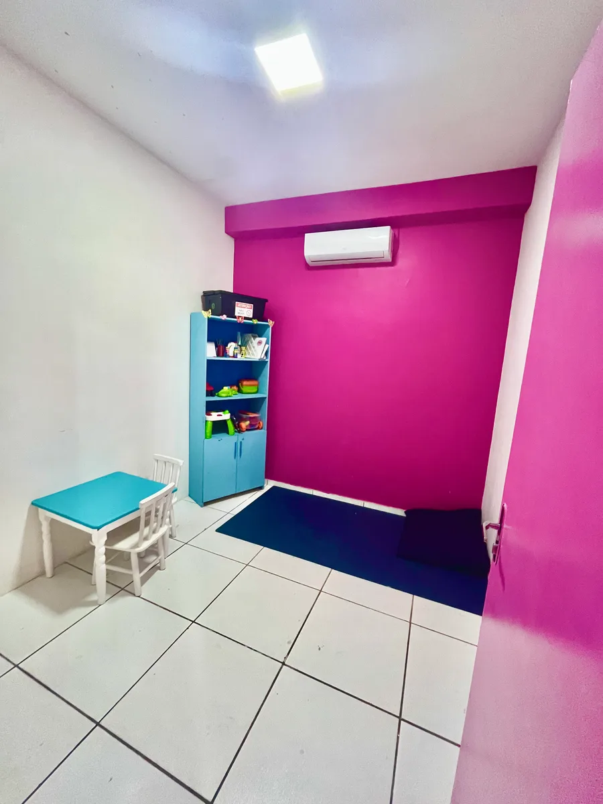
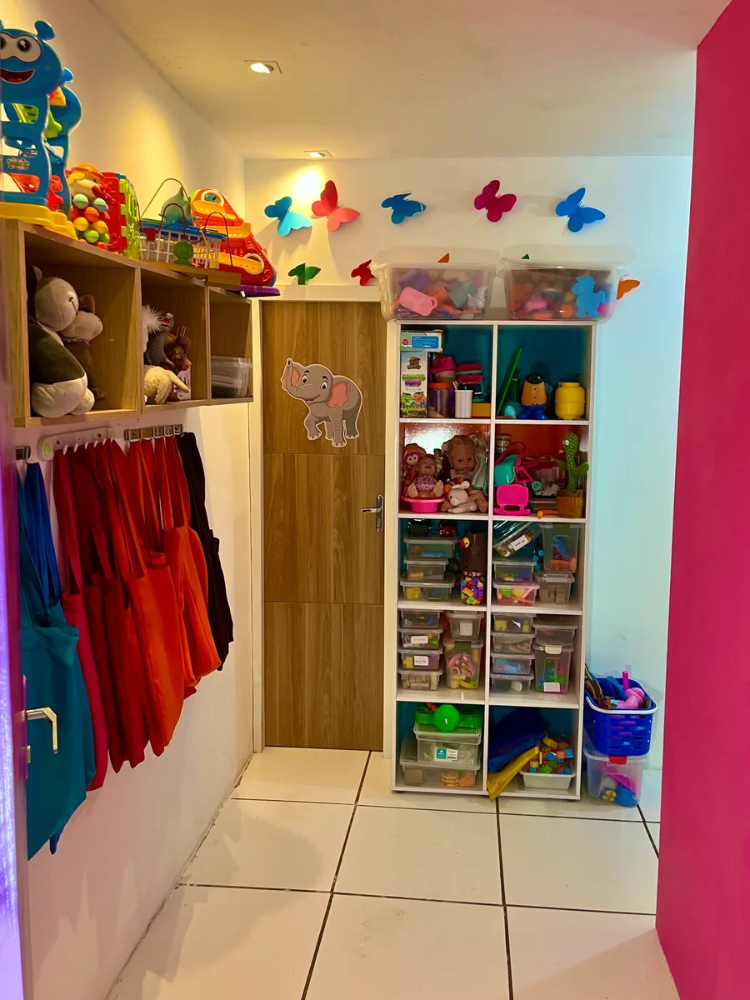
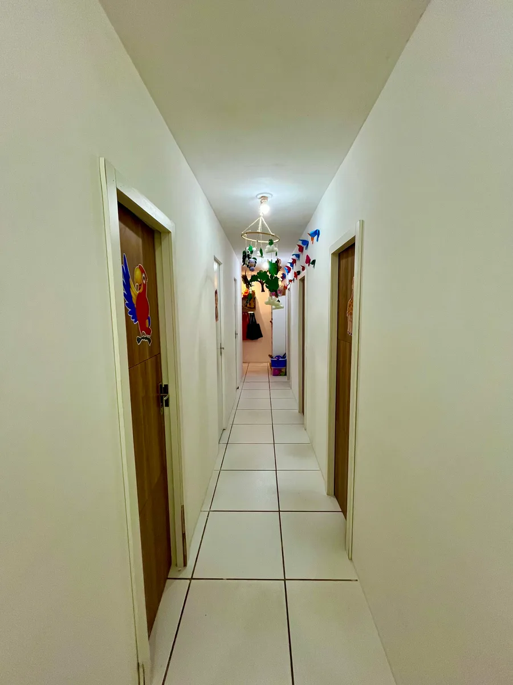
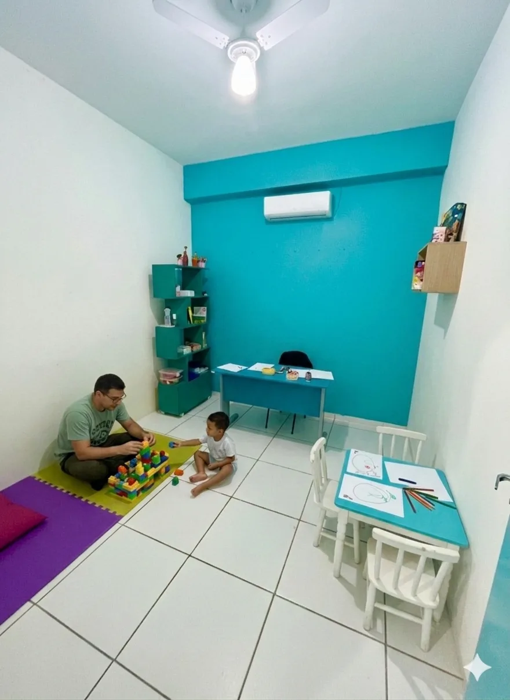
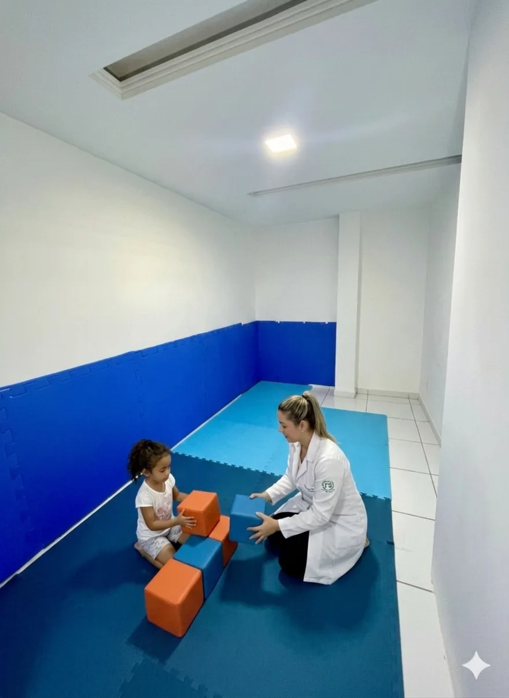
Se sua dúvida não estiver aqui, fale com nossa equipe pelo WhatsApp.
No primeiro contato, ouvimos o que você está buscando e explicamos as opções de atendimento. Depois, orientamos sobre os documentos e o agendamento da avaliação.
Sim. Atualmente atendemos Unimed, GEAP e Luminar. Nos convênios, os atendimentos da clínica são direcionados ao diagnóstico de TEA, conforme regras de cobertura, elegibilidade e autorização de cada plano. Nossa equipe orienta sobre encaminhamento, documentação e carteira do convênio.
Sim. No atendimento particular não é exigido CID para solicitar avaliação ou acompanhamento. A indicação da especialidade e do plano terapêutico é definida conforme a demanda apresentada e a avaliação profissional. Fale com a equipe para conhecer disponibilidade e valores.
Nos atendimentos particulares, a clínica pode avaliar crianças, adolescentes e adultos conforme a especialidade e a demanda apresentada. Nos convênios, a elegibilidade segue as regras de cada plano e a documentação clínica exigida.
Os requisitos variam conforme o convênio. Em geral, solicitamos encaminhamento ou solicitação médica com CID e quantidade de terapias quando exigidos pelo plano, além da documentação e da carteira do beneficiário. Nossa equipe confirma os requisitos antes do agendamento.
A frequência depende da avaliação profissional, dos objetivos terapêuticos, da indicação clínica e, quando houver convênio, das autorizações disponibilizadas pelo plano.
Estamos aqui para ouvir você e explicar como funciona o atendimento. Fale com a equipe sobre avaliações, convênios e horários.
Falar pelo WhatsAppJardim das Margaridas · próximo ao Cohatrac
São Luís - MA · CEP 65052-866
Atendimentos nos turnos da manhã e da tarde. Confirme o horário com a equipe.